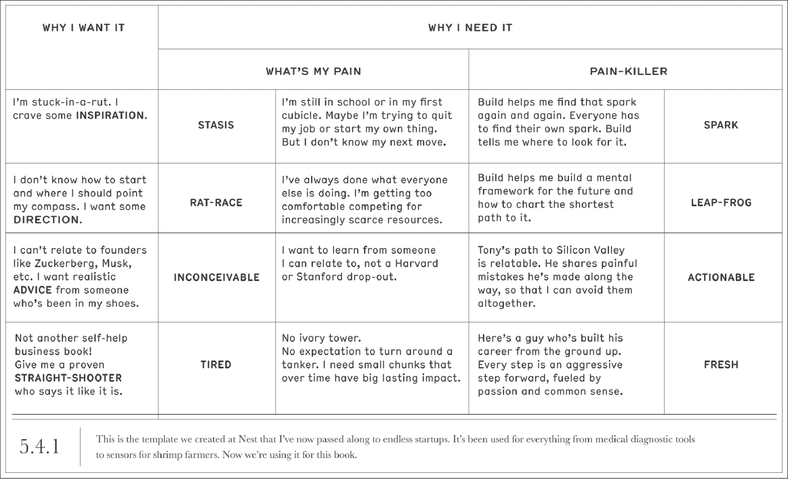
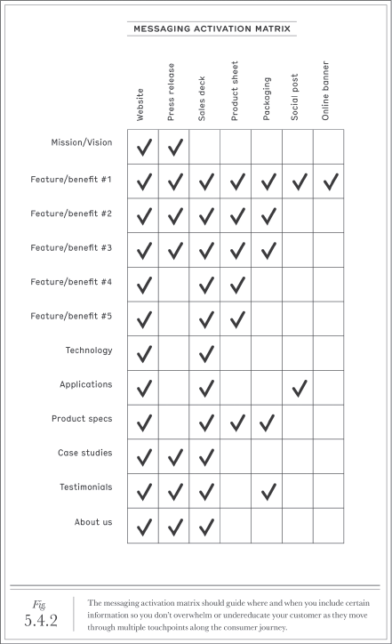
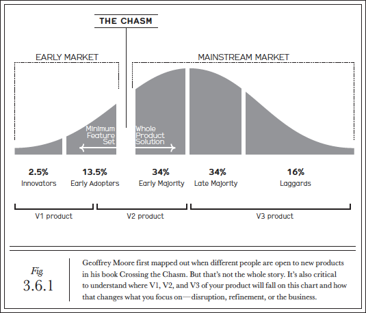
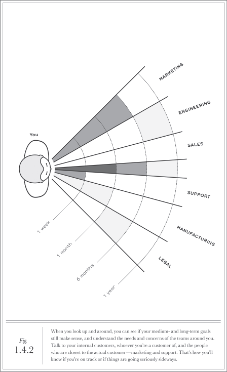

Tony Fadell, entrepreneur connu pour ses réalisations chez Philips, Apple et fondateur de Nest, nous présente avec “BUILD” un livre très pragmatique au sujet de la création au sens large. Créer ou construire quoi ? Un projet, une carrière, une entreprise… La création est à l’origine de nombreuses réflexions, que ce soit sur l’innovation, l’entrepreneuriat ou le design, jusqu’aux ressources humaines.
Depuis qu’il s’est lancé comme conférencier et consultant, une question primordiale lui a constamment été posée : comment avoir un impact et créer quelque chose d’important ? Après tout, l’homme est plutôt bien placé pour en parler puisqu’il participa activement à la création du légendaire iPod chez Apple et révolutionna les objets connectés et la domotique avec Nest. Plus particulièrement, la question repose souvent sur les choix à privilégier pour répondre à ce besoin d’impact. Quel métier choisir ? Quelle entreprise intégrer ? Quelle approche créative privilégier ?
Au fil de l’ouvrage, l’auteur distille de précieux conseils, modèles, points de vue et retours d’expériences qui se révèlent être des outils puissants nous amenant à réfléchir concrètement sur la manière de créer au sens large. D’abord, l’auteur s’appuie sur de nombreux modèles ou raisonnements qui sont de réels points d’ancrages pour le développement d’un projet, d’une entreprise, d’un produit ou service. Il nous sensibilise énormément sur l’importance du facteur humain dans le processus créatif : notre espèce se distingue de toutes les autres par ses traits hyper sociaux, ceci est d’autant plus vrai quand on prend conscience de l’impact de l’humain dans la création. Cet ouvrage est pertinent non pas seulement pour les entrepreneurs en herbe, mais aussi pour tout individu voulant intégrer des principes concrets pour s’accomplir dans le monde de l’entreprise et se passionner pour le processus créatif en lui-même.
La route paisible (ou pas) de la création
Au cœur de l’approche de Fadell réside un leitmotiv basé sur trois actions simples : “do, fail, learn”. L’importance de l’expérimentation est parfaitement représentée par cette idée d’agir. Cela implique de définir un objectif initial, chaque étape prise ensuite en faveur de cet objectif ne seront que des avancées, même si celles-ci comportent des erreurs ou des échecs. Après tout, le fait de se tromper une première fois représente le meilleur moyen de ne pas se tromper une seconde fois… c’est pourquoi l’échec est au centre de ce leitmotiv en trois actes.
Il appuie de manière importante sur l’âge adulte comme étant une période d’apprentissage infinie, qui diffère du système éducatif reposant sur l’évaluation et laissant peu de place à l’échec. C’est ainsi l’opportunité de se délester de ce cadre restreint pour expérimenter sans limites. Le facteur humain est déjà ici primordial selon lui, puisque le meilleur moyen de maximiser cette période d’apprentissage est de s’appuyer sur un mentor : il agit comme une sorte d’effet de levier en venant renforcer la réflexion, il doit être une sorte de deuxième cerveau multipliant le potentiel de réussite, issu d’un domaine convoité ou véritable polymathe au spectre de connaissance large. Quoi qu’il en soit, il doit être un guide sur la route menant à l’objectif.
Pourquoi ?
Tony Fadell a animé cette fameuse conférence TED dans laquelle il explique le principe premier du design et de la création : ouvrir les yeux ! C’est l’une des actions que les enfants réalisent mieux que quiconque, ils regardent le monde qui les entoure et ne cessent de le questionner sans prendre pour acquis quelconque usage ou mode de fonctionnement.
Sur la génération d’idée à impact, Tony Fadell explique qu’il y a trois éléments majeurs à valider : l’importance de comprendre “pourquoi” cette solution ou produit résout un problème avant d’imaginer “comment” elle ou il peut y parvenir, la nécessité de résoudre un problème que de nombreux individus rencontrent dans leur vie quotidienne, et enfin que ce problème, sa solution et la vision globale que l’on en a nous maintiennent concernés jusqu’à réalisation. L’auteur explique que le fait de se focaliser trop vite sur le “comment” implique un risque réel de ne pas combler le besoin que l’individu est venu obtenir : résoudre son problème, combler une douleur. Ici, la place donnée au storytelling est importante, afin de s’assurer que l’on arrive à articuler correctement notre vision sans se cacher immédiatement derrière un produit ou service.
Cela rejoint la notion de cycle de vie : il prend en compte les principes de vision, de données à disposition et de perception client. En effet, chacun de ces principes situés au cœur de la prise de décision n’auront pas la même place selon l’étape du cycle de vie. Tony Fadell nous explique que l’ordre d’importance d’un projet en V1 place la vision en premier, la perception client en second et la donnée client en dernier, car celle-ci est à ce stade présente seulement en quantité limitée voire inexistante. Pour un projet en V2, la donnée à disposition sera considérablement accrue par l’intermédiaire de tests ou études quantitatives/qualitatives, ainsi elle se placera en tête, puis sera suivi de la perception client devenue tangible, quand la vision sera reléguée au dernier plan puisqu’elle risquerait désormais de biaiser la courbe d’évolution “naturelle” du projet ou produit/service.
Comment ?
L’auteur nous explique donc que le “comment” doit venir plutôt tardivement dans la concrétisation d’un projet ou produit/service. Il y a l’art et la manière d’en arriver à ce stade, c’est ici que la notion de “design thinking” vient s’immiscer dans la discussion. À ce sujet, l’auteur nous explique que cela repose sur une approche centrée sur l’humain et inclusive : prenez un produit, il ne s’agit pas seulement de ce à quoi il ressemble, mais de ce que vous en faites, de la manière dont celui-ci est vendu, dans quel contexte, des caractéristiques du client auquel il est proposé… La réflexion à l’origine du “design thinking” nécessite de prendre en considération tout ce qui concerne l’environnement dans lequel le produit/service évolue et de chercher à atteindre le résultat ultime.
Le paroxysme de cette approche peut être représenté par une entreprise qui dégage une personnalité ou une identité tellement forte que l’attirance du client envers celle-ci devient presque inconsciente. Après tout, arrivez-vous clairement à expliquer pourquoi vous aimez par-dessus tout les produits Apple ? C’est un état d’esprit, une vision qui intègre l’entreprise, ses valeurs, sa culture et ses productions jusqu’au moindre détail, c’est l’ensemble de ces caractéristiques qui relèvent du “design thinking”.
Ainsi, en parallèle doit en découler une manière d’appréhender la stratégie de communication mise en place pour le produit/service et les usages à privilégier auprès du client. La notion de “messaging architecture” introduite par Tony Fadell relève à la fois d’un outil marketing puissant mais aussi d’un exercice important permettant de mieux arriver à transmettre au client la vision que l’on a du produit/service. C’est ici que les “douleurs” du client sont traduites en “pourquoi” et que le “remède” est traduit en “comment”. Cependant, vont venir s’agrémenter deux autres notions : le “pourquoi je le veux” ainsi que le “pourquoi j’en ai besoin”. Finalement, ce modèle va regrouper l’ensemble des caractéristiques de l’offre sous la forme d’un storytelling bien défini, afin de partager au client une vision globale ainsi qu’une identité propre.

Cette architecture de communication vient ensuite s’appliquer à l’aide de la matrice d’activation liée. Celle-ci va quant à elle permettre de décider de l’intermédiaire par lequel le client va être confronté à l’offre en croisant deux variables primordiales : les éléments distincts de storytelling (la mission, les caractéristiques du produit/service, une étude de cas, la technologie utilisée, l’approche de relation client, le processus de production…) et les différents supports de communication (site web, panneau publicitaire, publicité, bannière web, packaging, réseaux sociaux…). Le choix qui sera fait de la place de chacun des éléments communiqués au client doit être précisément défini, en fonction de l’impact ainsi que du parcours et de l’expérience client. Un client confronté trop tôt à des caractéristiques techniques complexes n’aura pas le même intérêt pour le produit qu’un autre client découvrant le soin apporté au choix des matériaux ou aux éléments de design, par exemple.
Ici, l’auteur nous explique finalement que la notion de “how” ne relève pas seulement de la manière de résoudre le problème en produisant un produit/service, mais plutôt d’un ensemble qui se forme autour d’une vision initiée dès la formation du “why”. Cette vision doit se transmettre formellement à travers le produit/service, via le marketing, les ventes, la relation client, la logistique, le packaging mais aussi par l’intermédiaire de tout autres facteurs n’ayant pas, à priori, une importance primordiale dans la structure. Il faut personnifier à outrance l’entreprise par l’intermédiaire de tous les points de contact avec le client.

Vers l’infini et au-delà ?
Le cycle de vie d’un produit/service ou d’une entreprise implique également de suivre une autre variable primordiale : la profitabilité. De la même manière que pour les étapes et versions d’un produit/service, il y a trois paliers de profitabilité majeurs. Sur le schéma partagé par l’auteur, connu dans l’univers des levées de fonds comme le “chasm”, soit le gouffre au cours du développement d’un produit/service, nous pouvons placer les trois niveaux de profitabilité de manière chronologique. La V1 du produit/service permet d’aller chercher son client clé qui croit fort au “why” et qui donnerait tout pour voir le projet prendre son envol : aucune profitabilité ne doit être attendue à ce stade. La V2 doit permettre de passer le gouffre (le fameux “chasm”) afin de réaliser des bénéfices unitaires via une marge brute positive sur le produit et comprendre la clientèle cible. La V3 doit permettre de devenir un acteur du marché mainstream ainsi que d’atteindre le dernier stade de profitabilité, soit des bénéfices d’ensemble grâce à une marge nette positive, pour que l’entreprise et l’ensemble de ses départements réalisent des profits.

L’approche profit doit être réfléchie de différente manière selon le modèle économique de l’entreprise, qu’il soit basé sur un produit ou un service. Une entreprise qui vend un produit doit se focaliser sur le coût de la marchandise vendue, afin de rechercher des marges sur la production. Une entreprise qui vend un service doit se focaliser sur le coût d’acquisition client, afin de supporter les ventes. Cependant, une entreprise qui intègre à la fois produits et services doit privilégier en premier lieu le produit, puis ajouter les services.
Pour maintenir le navire à flot une fois le projet lancé, l’auteur nous explique qu’un dirigeant doit avoir une vision à 360° et le facteur humain commence à avoir une réelle importance. Nous allons voir maintenant pourquoi est-ce qu’il revêt une place primordiale dans l’évolution de l’entreprise, mais également à l’échelle individuelle dans l’évolution d’une carrière. De nombreuses réflexions doivent avoir lieu sur les ressources humaines en entreprise, trop souvent sous-évaluées par les équipes dirigeantes. Fadell nous partage lui-même son expérience personnelle avec sa propre entreprise Nest, lorsqu’il a dû débarquer du navire (pourtant toujours à flot) pour des questions touchant majoritairement au facteur humain et à la culture d’entreprise…
Le facteur humain au centre de l’attention
L’auteur mentionne à de nombreuses reprises dans l’ouvrage l’importance du facteur humain, que ce soit au sein de l’entreprise ou à titre individuel au fil d’une carrière. En effet, il parle des notions de mentorat ainsi que de coaching pour valoriser l’appui que l’on peut obtenir ou fournir à différents stades d’une carrière. Fadell mentionne que le facteur humain peut, à lui seul, rendre un job réellement incroyable ou totalement inutile. C’est pourquoi il conseille également d’intégrer la variable liée au recrutement très tôt en entreprise. Cela doit être un sujet majeur traité de manière très pragmatique, en venant intégrer les nombreuses variables qui influencent la culture d’entreprise et l’évolution des ressources humaines.
Le management
Sur le management, Fadell nous présente l’idée selon laquelle, au sein d’une équipe ou d’une entreprise, trois variables sont à prendre en compte pour bien comprendre l’implication réelle de chaque individu : la hiérarchie, l’horizon temporel et le champ d’intervention. L’auteur nous présente un schéma sur lequel l’individu a face à lui un champ à 180° sur lequel de nombreux corps de métiers interviennent (marketing, ingénierie, vente, production…) et l’horizon temporel évolue (1 semaine, 1 mois, 6 mois, 1 an…).
Selon le rôle de l’individu dans l’entreprise, distingué entre équipes dirigeantes et contributeurs individuels, chacune de ces variables varie et chaque collaborateur doit ainsi prendre conscience de l’horizon et du champ d’application sur lesquels il travaille. PDG et équipe dirigeante consacrent 50% de leur temps au traitement des 6 prochains mois et de l’année à venir lorsque les managers consacrent la majorité de leur temps aux 2 à 6 prochaines semaines. Ces rôles-là disposent d’un champ d’application large avec un horizon à 180° permettant de prendre connaissance du travail de chacun des départements, surtout pour les dirigeants et PDG. Les contributeurs individuels passent quant à eux 80% de leur temps sur un horizon d’une à deux semaines et se focalisent sur leur propre département. Cependant, on oublie parfois les 20% de temps restants qui sont primordiaux pour faire d’eux de réels pépites : ils doivent être dédiés à l’intérêt porté aux autres départements afin de mieux comprendre le fonctionnement global de l’entreprise et ce qu’implique le travail de chacun des collaborateurs.

A ce stade, l’élément important que relève l’auteur est de bien identifier les équipes “fonctionnelles”, formées par défaut du fait des métiers/départements au sein de l’entreprise, mais aussi les “sous-équipes” formées de manière informelle au sein des premières.
Enfin, Fadell explique l’importance de traiter chaque produit et/ou service comme une entité unique, qui nécessite à priori, sa propre équipe d’ingénieurs, de vente, marketing et autres. Cela même si les répartitions en termes de chiffres d’affaires ou de volume d’employés concernés ne sont pas forcément comparables entre les produits/services.
Les décisions
Concernant la prise de décision, l’auteur distingue deux types de décisions : les décisions basées sur la data et les décisions basées sur les opinions. Les décisions appuyées sur les données sont plus simples à prendre et souvent sources de confiance parmi les équipes et dirigeants. Cependant, la data n’est pas toujours à disposition et il peut s’avérer risqué de vouloir forcément s’appuyer sur celle-ci lorsqu’elle n’est pas disponible, ou du moins de manière fiable. L’auteur explique que c’est souvent le problème avec le conseil en entreprise : venir proposer des solutions en s’appuyant sur de la data ou des expériences passées, même lorsque la décision nécessite d’appréhender correctement le domaine ou la trajectoire particulière de l’entreprise.
C’est ici qu’intervient la décision basée sur “l‘instinct”, ou plutôt sur une vision globale, puisque toute décision se doit de prendre à la fois de la donnée et de l’opinion. Le plus difficile est de savoir quand est-ce qu’une décision nécessite de surpasser la data par l’opinion et sur la manière d’y parvenir, car les collaborateurs sont souvent frileux ou peu confiants face à une telle approche. Un moyen d’y remédier est d’utiliser le storytelling, car il permet à la fois d’éclaircir la vision que l’on a pour cette décision, mais aussi de faciliter l’appropriation de celle-ci par les collaborateurs. Fadell nous explique que c’est l’un des savoirs-faire les plus importants qu’à su cultiver Steve Jobs au fil de sa carrière, parfois un peu durement mais souvent tel un réel visionnaire.
Le recrutement
Au sujet du recrutement, l’auteur nous présente les méthodes classiques souvent privilégiées : l’une plutôt “old-school” et l’autre plutôt “moderne”, aucune des deux n’étant selon Fadell réellement efficace. Le système “old-school” consiste simplement à effectuer un entretien avec un recruteur et des membres du département liés au poste du candidat. Le système “moderne” consiste quant à lui à intégrer plusieurs employés au processus de recrutement et de réaliser une sorte de scoring.
Le premier modèle met sur la touche une bonne partie des équipes dans la prise de décision quand la deuxième implique trop de monde tout en ne fournissant pas suffisamment de contexte pour aider à la prise de décision. Fadell nous présente quant à lui le système dit “three-crowns” qu’il a imaginé au cours de sa carrière : une première couronne composée du responsable recrutement et les seconde et troisième couronnes composées des responsables de départements constituant les clients internes du candidat. Ceci permet d’avoir une approche métier et de définir parfaitement quelles attentes sont liées au nouveau candidat en termes de rôle et de missions, de la même manière qu’un client évalue son besoin avant de passer à l’achat.
L’accompagnement
La notion de mentorat et d’accompagnement sont parmi les principes ayant suivi Tony Fadell sur l’ensemble de sa carrière et qui continuent d’être un facteur de satisfaction personnel pour lui. Il est aujourd’hui lui-même devenu mentor auprès de nombreux entrepreneurs. Selon lui, il est possible de créer une entreprise sans co-fondateur, de créer un produit/service sans équipe, cependant il est impossible de faire l’un ou l’autre sans un mentor…
Le coaching et le mentorat sont deux choses différentes : le mentor intervient sur des réflexions profondes, autant personnelles que professionnelles alors que le coach traite dans ce cas précis du collaborateur et de son rôle en entreprise. Les coachs sont là pour faire avancer les collaborateurs en termes “business” quand les mentors sont là pour aider l’individu à se réaliser dans sa globalité. Un coach peut être représenté à travers le rôle d’un manager, d’un dirigeant ou d’un responsable RH. Un mentor n’est pas un individu ayant un rôle clairement défini, il s’agit d’une personne représentant un ensemble de valeurs ou principes et une épaule sur laquelle s’appuyer pour évoluer.
Ceci nous amène à la question du rôle du manager : l’auteur nous explique qu’un manager qui continue de faire ce qu’il adorait faire dans son rôle de contributeur individuel n’est pas un bon manager. Son métier repose désormais sur du management, ainsi la majorité de son temps doit être destinée à superviser, accompagner et dynamiser les équipes. Il intègre le costume du coach et il doit être le leader qui transmet la vision de l’entreprise, du produit, du service à son équipe, afin que celle-ci soit la plus efficace possible et durablement ancrée dans le projet d’entreprise.
La direction
Le manager doit aussi être celui qui va chercher plus loin : plutôt que d’appréhender les ventes, le marketing, la gestion produit ou les finances comme des départements distingués, il faut comprendre quels sont les liens qui les rassemblent au sein d’une vision d’entreprise globale. Fadell nous explique que c’est seulement lorsqu’il a su s’intéresser à la manière dont travaillaient les autres départements et aux problématiques auxquelles ils faisaient face qu’il a su synthétiser mentalement l’entreprise. C’est ce qu’implique le fait d’être un bon manager, et au-delà même, d’être un bon dirigeant. Le fonctionnement et les liens entre chacune de ses branches doivent être visibles et clairement définies mentalement.
Le dirigeant quant à lui, doit être une personne qui porte une attention constante à tout ce qui se passe dans l’entreprise. Cependant, il ne faut qu’il fasse des choix sur le(s) département(s) sur le(s)quel(s) porter son attention. Il faut se soucier suffisamment de chaque activité de l’entreprise pour pouvoir recruter des personnes qui s’en soucient autant. L’auteur mentionne la notion de “parents CEO” pour expliquer l’importance de porter de l’attention à tous les niveaux. De la même manière que l’on félicite les parents lorsqu’un enfant réalise de grandes choses, le dirigeant participe au développement de son entreprise et des personnes qui évoluent en son sein, au même titre qu’un parent permet à son enfant d’évoluer et d’atteindre des étapes primordiales au cours de sa vie. Vous êtes dirigeant ? Félicitations, vous êtes par la même occasion (re)devenu parent !
Une carrière en 5 étapes
Enfin, pour répondre à cette fameuse question posée en introduction, Tony Fadell partage les étapes qu’il faut selon lui privilégier pour réaliser pleinement une carrière d’entrepreneur accompli :
- Travaillez en start-up
- Travaillez en grande entreprise sur un poste à responsabilité
- Trouvez un mentor pour vous aider à naviguer plus sereinement et faire évoluer votre état d’esprit perpétuellement
- Trouvez un co-fondateur pour partager la charge de travail ou un profil complémentaire pour réaliser le projet de votre vie
- Trouvez des personnes extraordinaires pour vous rejoindre : privilégiez la qualité à la quantité
Surtout, n’oubliez pas le leitmotiv introduit par l’auteur en début d’ouvrage : “do, fail, learn”. Essayez et trompez-vous, ce sera toujours la meilleure façon de savoir comment faire les choses correctement. Aussi, les bonnes choses prennent du temps et une expérience qui permet d’apprendre beaucoup prend d’autant plus de temps. Ne le perdez pas à passer d’entreprise en entreprise et de projet en projet : finissez ce que vous avez commencé, ce sera la meilleure manière de savoir ce qu’il en est réellement, les opportunités se trouvent parfois au bout du tunnel…